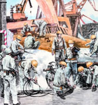
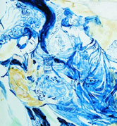
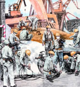
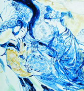

RSS
RSS


去年接受《卫报》采访、谈到英国学校纷纷采用东亚方法教授数学的做法时，郑乐隽说：“有一种陈腔滥调，说什么东亚人在数学上就是好，因为我祖上是中国人，所以这种话我听了好多。’
3克莱儿·麦克福尔的畅销书《摆渡人》长期稳居当当图书和电子书的各大年度榜单，2017年纸书销量已突破150万册。华语世界深具影响力的心灵作家张德芬，收获数十万当当读者评论，好评率也高达99.9%。
作为内蒙古自治区锡林郭勒大草原走出的作家，路远的经历可谓丰富多彩，他做过工人、乌兰牧骑演员，1988年进入鲁迅文学院研究生班深造，与莫言、余华、毕淑敏、刘震云、迟子建等为同窗。
一部部家训经典所承载的忠厚传家、勤俭孝友、诚实守信、清正廉洁等美德浸入每一个中国人的骨髓血脉。
 



光明日报社概况 | 关于光明网 | 报网动态 | 联系我们 | 法律声明 | 光明员工 | 光明网邮箱 | 网站地图
光明网版权所有